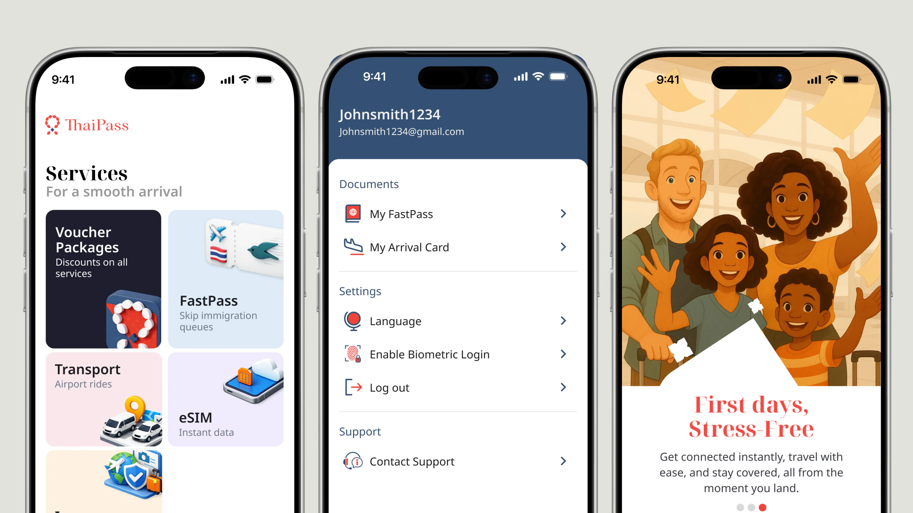
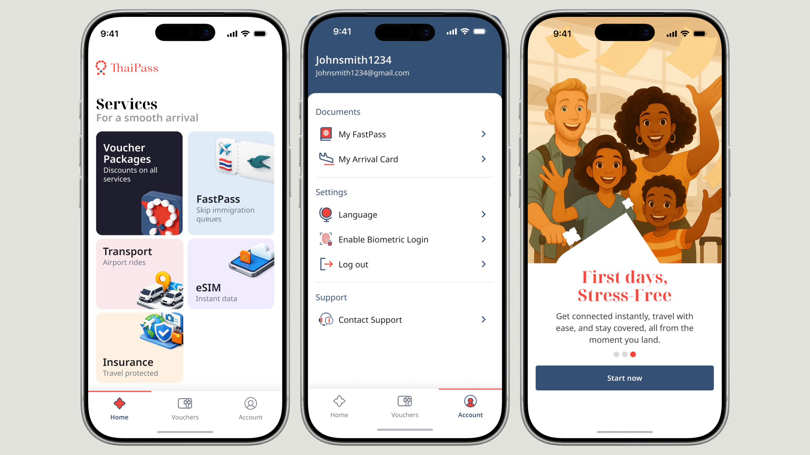
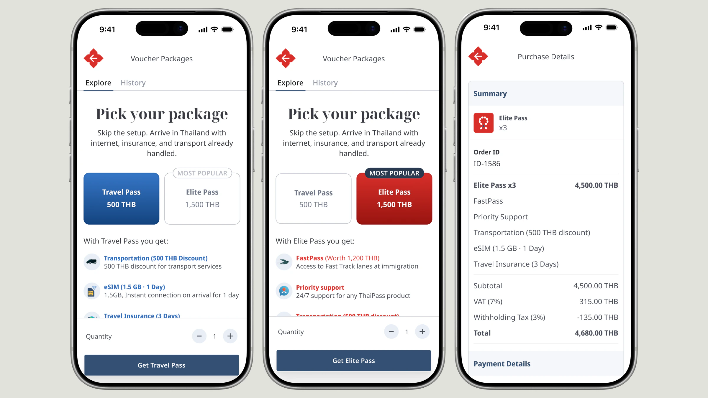
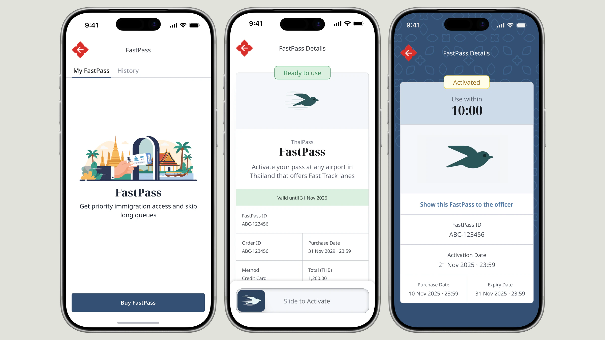
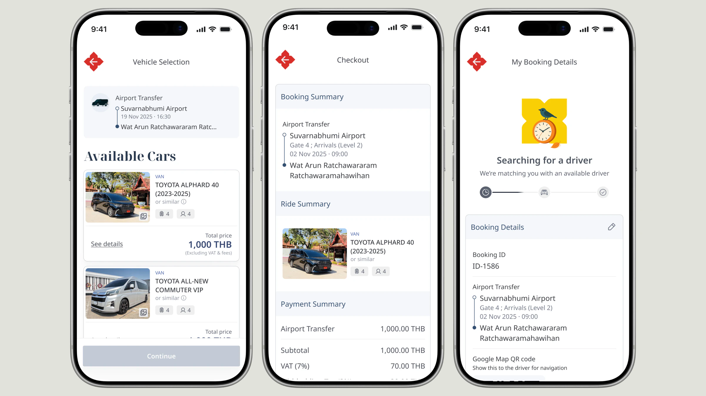
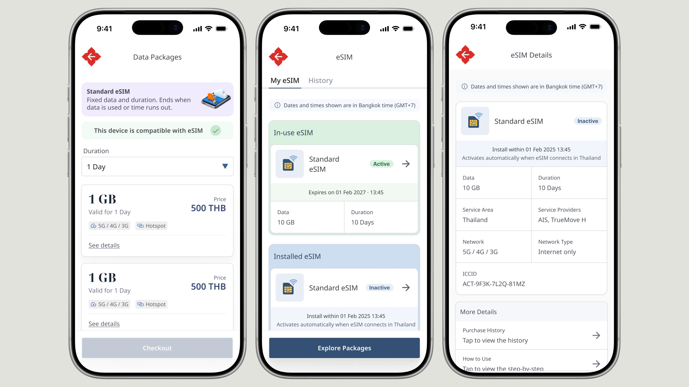
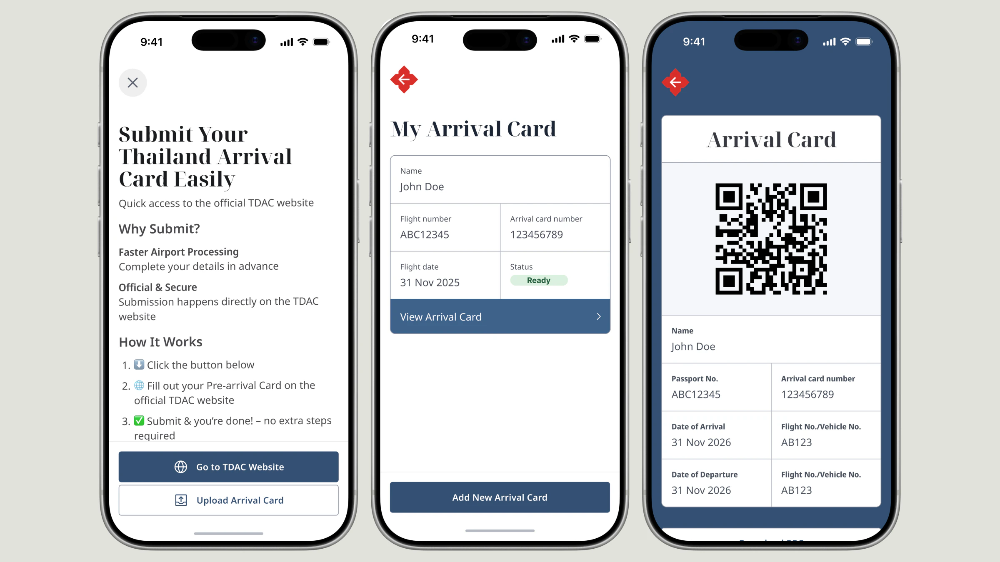

A single, trusted platform that gets international visitors to Thailand fully prepared before they land — documentation, connectivity, transport and insurance, unified into one journey.

ThaiPass consolidates the essential travel services an international visitor needs — built as a travel companion, not just a booking tool. The guiding idea throughout: arrive prepared, not overwhelmed.
Travelling to Thailand means juggling multiple platforms before and after arrival — each with its own friction.
How might we design a single, trusted platform that simplifies the entire journey — from pre-arrival preparation to arrival and beyond?
Four research lenses framed the work before any screen was drawn:
Each service was designed to disappear into the trip — minimal decisions, clear trust signals, everything retrievable the moment it’s needed.






Great product design isn’t about features — it’s about reducing stress at every step of the user’s journey.